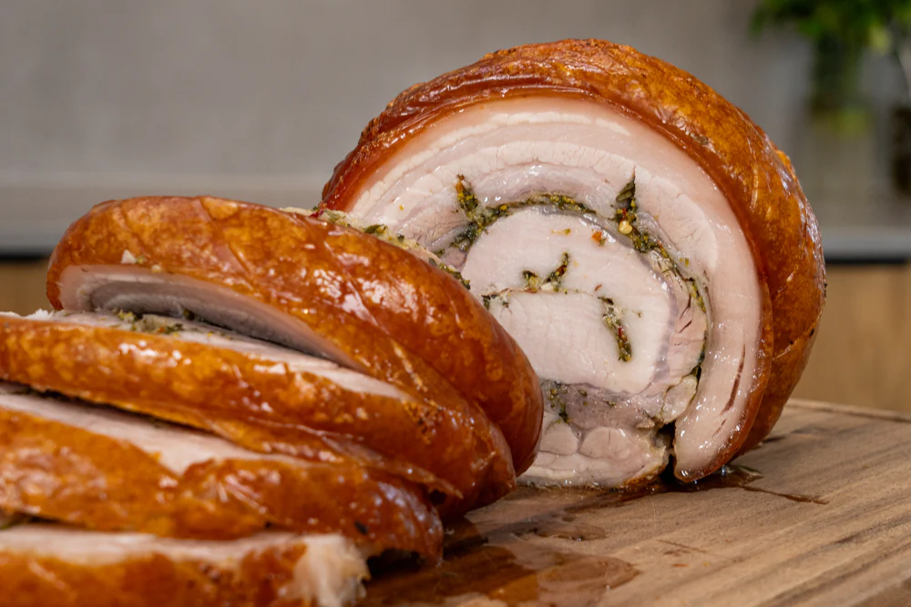

Crispy Porchetta

Andy Cooks Crispy Porchetta
I love porchetta - the Italian pork
roast! You have juicy pork with loads
of flavour and a crispy crackling on
the outside. It's a great dish to make
when you have family or friends over for
a meal or for your Sunday lunch. Here's
my porchetta recipe.
Ingredients
- 1 pork belly, bone out, skin on, with
the pork loin still attached
(If you can't get one, a pork belly without the loin will also work)
- 4 large sprigs of rosemary, finely chopped
- 12 cloves of garlic, grated
- zest of 1 lemon
- 1 bunch of flat-leaf parsley, roughly chopped
- 1tpsp (15ml) of chilli flakes
- 1 tbsp (15ml) of fennel pollen (or toasted fennel seeds)
- 30g (about 1oz) of salt
Directions
- To make the marinade, mix everything except
the pork in a bowl. Leave it in the fridge until
you are ready to use it.
- To prepare the pork, start by rolling it to see where
the skin overlaps. Trim the skin back to that point, as
you don't want any skin rolled on the inside.
- Next, remove the loin by following the seam. Then, butterfly the loin
by running your knife down the middle and on each side to open it up.
Add about 1/4 of the marinade and set it aside, ready to be marinated and rolled.
- To prepare the belly part, start by scoring the skin in the opposite direction to
how the string will be tied. A razor blade is ideal, but a sharpe knife works too.
Next, cut deep score lines into the flesh side for the marinade to penetrate.
- Rub the rest of the marinade into the belly part thoroughly
- Place the loin back onto the belly and roll the belly over the loin
Tie the porchetta, working from the centre outwards as tightly as possible.
Then, place it on an oven tray with a rack and leave it uncovered in the fridge
for 24 to 48 hours.
- When ready to cook, preheat the oven to 225C (445F). Cook the porchetta at this temperature for
40-45 minutes, then turn the oven down to 140C (285F) and cook until the internal temperature
reaches 70C (170F). This will take about 3 hours, but it's best to start checking around 1.5 hours
into the cooking time.
- Once the internal temperature reaches 75C, remove the porchetta and let it rest for 20-30 minutes before
carving and serving. If it's cooked quicker than anticipated, you can leave it to rest longer and then
briefly place it back in the oven to bring the exterior back to temperature.
Home